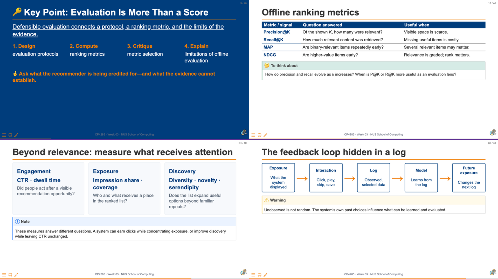
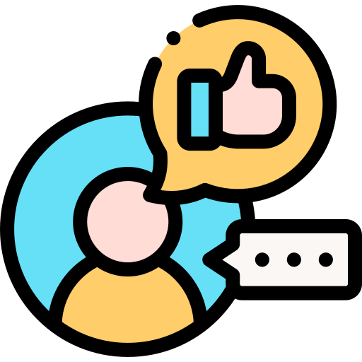

CP4285 Modern Recommendation Systems — Week 04
soc-n.us/cp4285-t2610-w04
01 Sep 2026

Canvas discussion board · submitted by Mon, 31 Aug · 23:59 SGT
Use the responses as a constraint on today’s models: richer capacity can learn a more flexible interaction function, but it cannot recover information that the system never recorded.
A neural recommender does not replace the evaluation contract. It replaces a fixed interaction rule with a learned function of the representations and evidence available to it.
Note
Today: compare latent-factor and neural interaction functions, reason about implicit-feedback training, and ask when a model’s score is not yet an explanation.
Build
Describe a neural recommender as embeddings, an interaction function, and a training objective.
Compare
Contrast a latent-factor dot product with a learned non-linear interaction function.
Interpret
Identify what implicit feedback supports—and what an unobserved interaction cannot prove.
Critique
Assess whether a performance claim, explanation, and safeguard are aligned.
TriRank extends the user–item graph with review aspects, modelling users, items, and the aspects mentioned in reviews as a tripartite graph. That extra evidence can support explanations such as “recommended because you value battery life and display quality.” TriRank was one of the final precursor works to Neural Collaborative Filtering (NeuCF) pioneered here at NUS.
A static user profile treats interactions as a collection. A sequence model asks whether order, recency, and session context change the next useful recommendation.
In Week 5:

CP4285 · Week 04 · NUS School of Computing